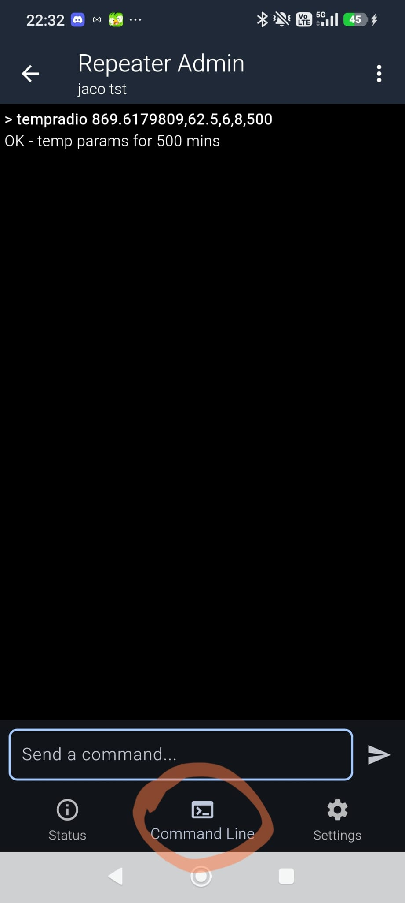
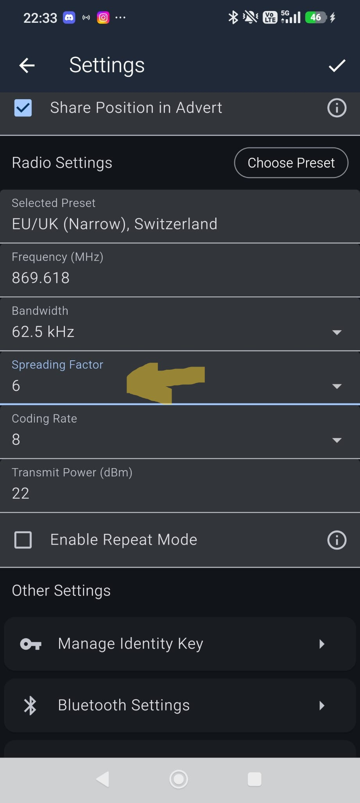

W nadchodzący weekend przeprowadzamy tymczasowy test zmiany konfiguracji z SF8/CR8 na SF6/CR8. Nie planujemy stałej zmiany sieci – test ma na celu wyłącznie zweryfikowanie prędkości działania oraz, co dla nas najważniejsze, zasięgu w tych ustawieniach.
Ramy czasowe testu:
• Rozpoczęcie: sobota, 20 czerwca 2026 r., godzina 20:00
• Zakończenie: niedziela, 21 czerwca 2026 r., godzina 20:00
tempradio sprawia, że nowe ustawienia są aplikowane w repeaterach wyłącznie na określony czas. Po upływie zaprogramowanych minut, repeatery samoistnie i bez Twojej pomocy powrócą do bazy (SF8/CR8).reboot) również natychmiast anuluje tryb tymczasowy i przywróci poprzednie, domyślne parametry radia.
Połącz się zdalnie ze swoim urządzeniem zarządzającym. Poniższy screen wskazuje miejsce wprowadzania komend CLI (gotową komendę znajdziesz w Kroku 2):

Rys 1. Panel CLI – Miejsce wpisania komendy dla repeateraStrona automatycznie pobiera aktualny czas z Twojego urządzenia i precyzyjnie wylicza minuty pozostałe do końca testów (niedziela, godz. 20:00). Skopiuj komendę i po prostu wklej ją do terminala CLI. Po zatwierdzeniu poczekaj na potwierdzenie OK.
| Wartość | Parametr techniczny |
|---|---|
869.6179809 |
Częstotliwość / Frequency (MHz) |
62.5 |
Szerokość pasma / Bandwidth (kHz) |
6 |
Współczynnik rozpraszania / Spread factor (SF) |
8 |
Współczynnik kodowania / Coding Rate (CR) |
X |
Długość trwania ustawienia tymczasowego (w minutach) |
Dopiero po pomyślnym przesłaniu komendy do wszystkich podległych repeaterów (zachowując kierunek od najdalszego do najbliższego), zmień ustawienia w swoim Companionie.

Rys 2. Ustawienia aplikacji Companion – Zmiana parametrów SF oraz CRW ustawieniach aplikacji Companion wprowadź następujące wartości ręcznie:
68W niedzielę o godzinie 20:00, gdy repeatery same wrócą do domyślnych parametrów, Twoim jedynym zadaniem będzie ponowne przestawienie Companiona na SF8.